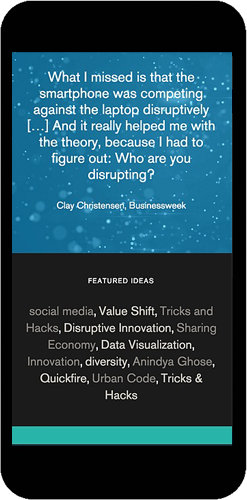
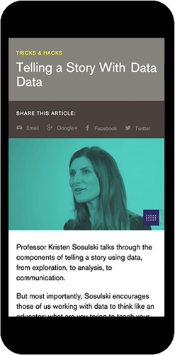
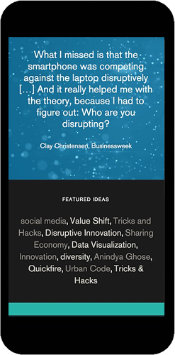
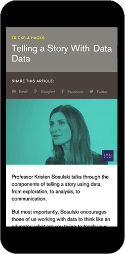

NYU Stern wanted to breathe new life into a user-driven online community of thought leaders and active students.
Geared toward the current the student generation, they wanted a site and user experience that reflects the immediacy of its content.
I built-out a robust user system within the WordPress backend, which involved building a front end editor for users to share and post content. The site sports both a private, invite-only communities as well as a public-facing site.